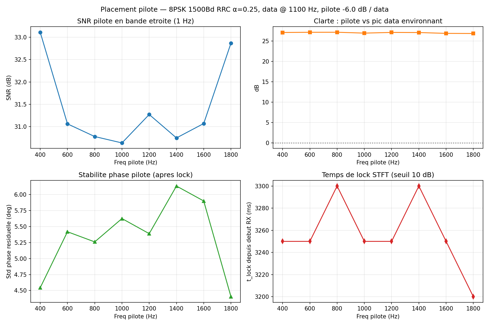
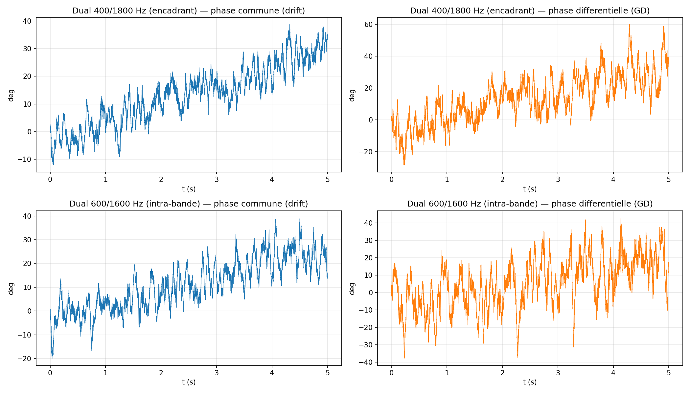
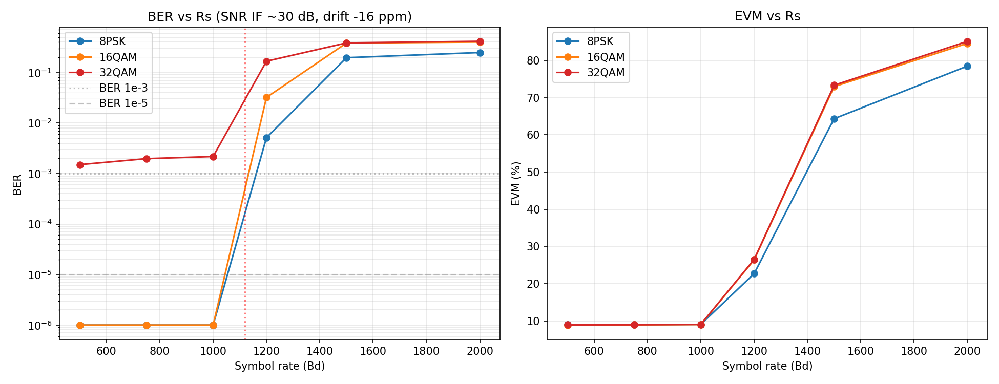
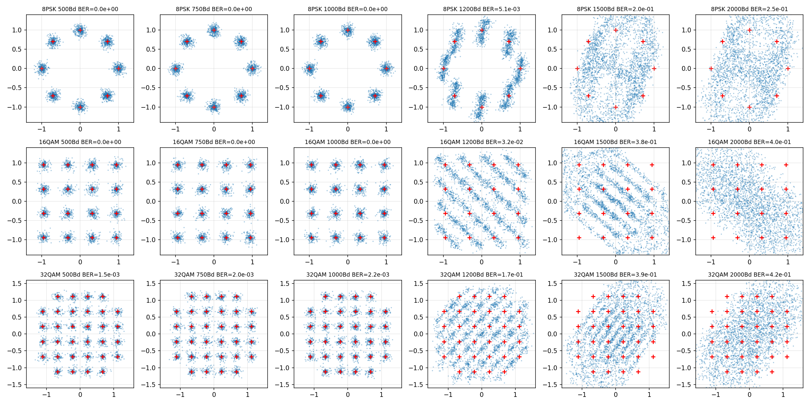

Spectres complets mesures apres canal : on voit le bruit triangulaire en montant en frequence, la bande data autour de 1100 Hz, et le pilote (barre rouge). Les pilotes en bord de bande (400 et 1800 Hz) sont hors du spectre data -> SNR maximal.
Objectif : concevoir un modem broadcast (point-multipoint, sans ARQ) pour transmettre des images via les relais NBFM voix radio amateur. Exploration du placement des pilotes, balayage de debit, comparaison de constellations.
Les caracteristiques du canal NBFM mesurees (voir rapport canal) :
| Parametre | Valeur |
|---|---|
| Bande utile a -3 dB | 300 - 2200 Hz (1900 Hz) |
| SNR audio en mode data | ~30 dB |
| Derive d'horloge mesuree | -16 ppm (jusqu'a 200 ppm possible) |
| Phase non-lineaire residuelle | ~40 deg std dans la bande |
| Group delay | ~1 ms de variation dans la bande |
| Limiteur audio en mode voice | compression ~1 dB, ecrase la BW haute |
Contraintes modem :
HSMODEM place le pilote au centre du signal data (heritage SSB QO-100). En FM l'optimisation differe a cause du noise shaping triangulaire post-demodulation et des filtres de bord (HPF CTCSS 300 Hz, LPF audio 2200 Hz).
Banc : signal 8PSK 1500 Bd RRC α=0.25 a 1100 Hz + pilote CW -6 dB/data a differentes frequences (400-1800 Hz). Mesure apres passage dans le simulateur canal.

SNR bande etroite (1 Hz), clarte vs spectre data, stabilite de phase, et temps de lock en fonction de la frequence du pilote.
Spectres complets mesures apres canal : on voit le bruit triangulaire en montant en frequence, la bande data autour de 1100 Hz, et le pilote (barre rouge). Les pilotes en bord de bande (400 et 1800 Hz) sont hors du spectre data -> SNR maximal.
Avec 2 pilotes encadrant le data, on peut separer deux informations :

SNR et stabilite de phase selon le scenario. Le mono pilote garde 3 dB d'avance en SNR (budget de puissance non partage), mais le dual apporte le tracking du group delay.

Phase commune (drift) et phase differentielle (group delay) au cours du temps, pour les deux scenarios dual. La pente de la phase differentielle donne la derive d'horloge quasi-parfaitement (estime -16 ppm mesure = -16 ppm injecte).
| Scenario | SNR pilote(s) | Phase sigma | Freq offset | GD rate |
|---|---|---|---|---|
| Mono 1000 Hz (centre data) | 20.5 dB | 5.5 deg | +0.02 Hz | - |
| Mono 400 Hz (bord) | 21.4 dB | 4.4 deg | +0.01 Hz | - |
| Dual 400/1800 Hz | 18.4 / 18.9 dB | 6.2 deg | +0.02 Hz | +0.016 ms/s |
| Dual 600/1600 Hz | 17.1 / 17.4 dB | 7.8 deg | +0.02 Hz | +0.015 ms/s |
Banc complet : TX = preambule 256 symboles QPSK deterministes (pour sync timing) + 6000 symboles data, RRC α=0.25. Data centre a 1100 Hz, pilotes a 400 et 1800 Hz (-6 dB/data). Canal : simulateur NBFM avec bruit IF 0.165 (SNR audio ~30 dB), derive -16 ppm, delai initial fixe 3 s. RX : correlation preambule pour timing, phase recuperee via moyenne des phases pilotes, match RRC, slicer dur.

BER et EVM pour les trois constellations. La zone verte (Rs ≤ 1000 Bd) : pilotes hors du spectre data, BER nul. Au-dela de 1200 Bd, interference pilote-data, la constellation s'effondre.
| Modulation | 500 Bd | 750 Bd | 1000 Bd | 1200 Bd | 1500 Bd | 2000 Bd |
|---|---|---|---|---|---|---|
| 8PSK BER | 0 | 0 | 0 | 5.1e-3 | 0.20 | 0.25 |
| 16QAM BER | 0 | 0 | 0 | 3.2e-2 | 0.38 | 0.40 |
| 32QAM BER | 1.5e-3 | 2.0e-3 | 2.2e-3 | 0.17 | 0.39 | 0.42 |
| EVM | ~9 % | ~9 % | ~9 % | ~26 % | ~73 % | ~85 % |

Constellations recues par modulation (lignes) et symbol rate (colonnes). Les croix rouges sont les points theoriques. A Rs ≤ 1000 Bd les nuages sont serres autour des references ; a partir de 1200 Bd la contamination par les pilotes cree une signature geometrique (rayures diagonales typiques d'une interference CW dans le symbol period).
| Modulation | Rs max propre | Debit brut | FEC 3/4 | Debit net |
|---|---|---|---|---|
| 8PSK | 1000 Bd | 3.00 kb/s | 3/4 | 2.25 kb/s |
| 16QAM | 1000 Bd | 4.00 kb/s | 3/4 | 3.00 kb/s |
| 32QAM | 1000 Bd | 5.00 kb/s | 2/3 | 3.33 kb/s |
Le spectre occupe par le signal shape RRC est Rs x (1 + alpha).
Avec α = 0.25 et les pilotes a 400/1800 Hz, la data centree a 1100 Hz occupe
une bande symetrique de part et d'autre :
La contamination mutuelle pilote-data degrade le SNR effectif par symbole data d'environ 10-15 dB (le pilote a -6 dB contribue comme interference coherente sur les bins data qui lui correspondent).
Les WAVs generes ont ete joues a travers un vrai TX NBFM, la sortie RX enregistree sur le canal reel. Un second test fait varier le niveau d'entree TX (0, -3, -6, -10, -15 dB) pour reveler le comportement du limiteur d'excursion du modulateur FM.
| Modulation | 500 Bd | 750 Bd | 1000 Bd |
|---|---|---|---|
| 8PSK | 0 | 0 | 1.2e-3 |
| 16QAM | 0 | 1.2e-4 | 2.1e-2 |
| 32QAM | 0 | 1.3e-2 | 4.3e-2 |
Au niveau 0 dB, le BER etait systematiquement plus degrade que prevu par le simulateur, surtout en 32QAM et 16QAM 1000 Bd. Hypothese : le modulateur FM ecrete les pics du signal (hard-clip sur l'excursion).
| Modulation | Rs | 0 dB | -3 dB | -6 dB | -10 dB | -15 dB |
|---|---|---|---|---|---|---|
| 8PSK | 750 | 0 | 0 | 0 | 0 | 0 |
| 8PSK | 1000 | 2.7e-3 | 3.5e-4 | 3.5e-4 | 4.1e-4 | 1.7e-4 |
| 16QAM | 750 | 5.9e-5 | 0 | 0 | 0 | 1.8e-4 |
| 16QAM | 1000 | 1.4e-2 | 1.4e-2 | 6.4e-3 | 1.0e-2 | 1.1e-2 |
| 32QAM | 500 | 1.5e-4 | 0 | 0 | 0 | 4.4e-4 |
| 32QAM | 750 | 7.2e-3 | 2.1e-3 | 4.7e-5 | 3.8e-4 | 3.4e-3 |
| Modulation | Rs | Niveau | BER | Debit brut | FEC | Debit net |
|---|---|---|---|---|---|---|
| 8PSK | 750 Bd | n'importe | 0 | 2.25 kb/s | minimale | 2.1 kb/s |
| 16QAM | 750 Bd | -3 a -10 dB | 0 | 3.00 kb/s | 3/4 | 2.25 kb/s |
| 32QAM | 750 Bd | -6 dB | 4.7e-5 | 3.75 kb/s | 3/4 | ~3 kb/s |
Le 32QAM 750 Bd a -6 dB est le vrai optimum OTA, depassant le 16QAM identifie sur simulateur. Le simulateur seul sous-estimait ce qui etait atteignable parce qu'il ne modelisait pas le hard-clip TX.
Le simulateur nbfm_channel_sim.py a ete enrichi d'un parametre
tx_hard_clip (defaut 0.55) qui clip l'amplitude audio avant le
modulateur FM. Avec ce parametre active, le simulateur reproduit la degradation
BER observee a 0 dB en 32QAM 750 Bd (BER 4.7e-5 vs 0 sans clip), meme si la
severite exacte de l'OTA (7e-3) indique un soft-clipping additionnel du TX
reel.
Option 2 (pilotes TDM) comme prochain prototype, car elle apporte le plus de debit avec le moins de complexite. Mesurer BER vs Rs avec pilotes inseres 1/20 symboles, pousser jusqu'a 1500 Bd pour voir le plafond canal pur.
Scripts :
study/pilot_placement_bench.py,
study/dual_pilot_bench.py,
study/modem_ber_bench.py,
study/nbfm_channel_sim.py.
Voir aussi : rapport de caracterisation du canal et du simulateur.